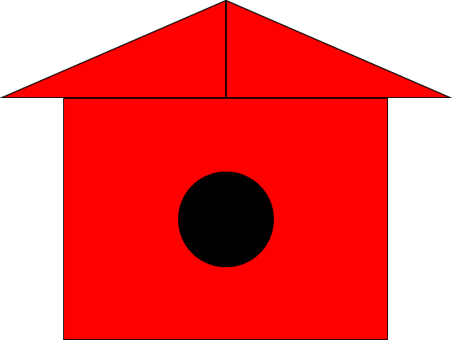
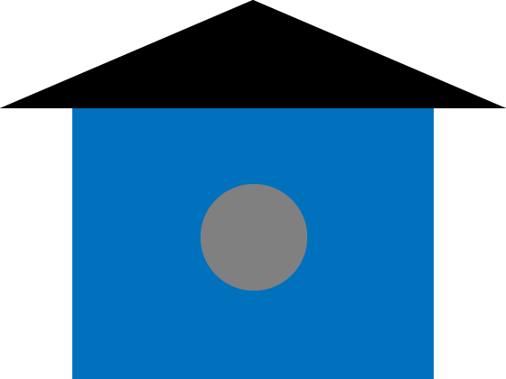

The Program
- Open Illustrator
- Create file - Common 1366 x 768
- Using the rectangle tool create a shape that is 400 x 300
- Create another rectangle going right from the top center line of rectangle 1, 280 x 120
- Create another rectangle going left from the top center line of rectangle 1, 280 x 120
- Using the selection tool select the top right rectangle, then using the pen tool click the top right little square
- Using the selection tool select the top left rectangle, then using the pen tool click the top left little square
- Using the ellippse tool create a 118 x 118 circle in the center of rectangle 1
- Change the color of the circle to the color of your shoes
- Change the color of the rectangles to your favorite color
- Export the file as a png
- Send to zkochaji@gmail.com
Original

Kevin's Design

Sam's Design